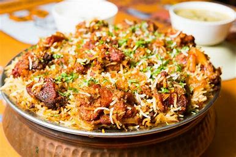
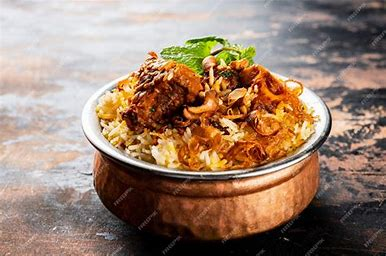
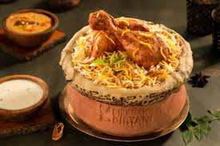

Biryani
Taste these delectable classics, delectable biryanis to make your day.
Restaurants to explore

Hotel Salwa 4 • 20-25 mins
South Indian, Biryani, Kerala
Fort Kochi
Hotel Salwa 4 • 20-25 mins
South Indian, Biryani, Kerala
Fort Kochi
.jpeg)
Salkara Grills 4 • 15-20 mins
South Indian, Kerala, Biryani
Thopumpady

Dindigul Thalappakatti 4.2 • 35-40
Biryani, Barbecue, South Indian
Panampilly Nagar
Cochin Palace Restaurant 4.3 • 50-55 mins
South Indian, North Indian
Vyttila
UBQ by Barbeque Nation
North Indian, Barbecue,Biryani

Dum Safar Biryani 3.3 •
Biryani, Kebabs,Indian, Desserts

Paragon Salkara Xpress 45-50 mins
Kerala, Grill, Biryani,Chinese,
Paragon Salkara Xpress 45-50 mins
Kerala, Grill, Biryani,Chinese,

The International Hotel 4.2 • 50-55 mins
Kerala
Le Meridien - Latest Recipe
Le Meridien - Latest Recipe
4.5 • 60-65 mins
Maradu

Fudtodo 20% OFF UPTO ₹50 rupiess
Fudtodo
3.9 • 60-65 mins
Indian
Tripunithura
Fudtodo 20% OFF UPTO ₹50 rupiess
Fudtodo
3.9 • 60-65 mins
Indian
Tripunithura

Pandari's Biriyani Pandari's Biriyani
4.4 • 40-45 mins
Biryani
Kaloor

Tummy Singh Tummy Singh
4.6 • 50-55 mins
North Indian, Asian
Kaloor